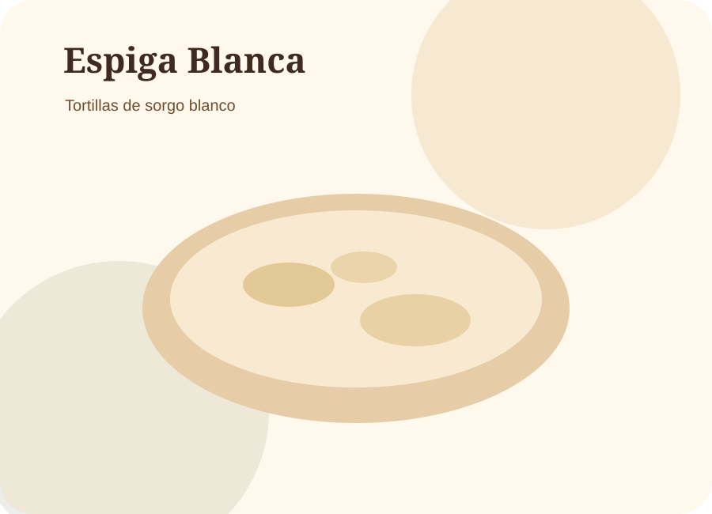
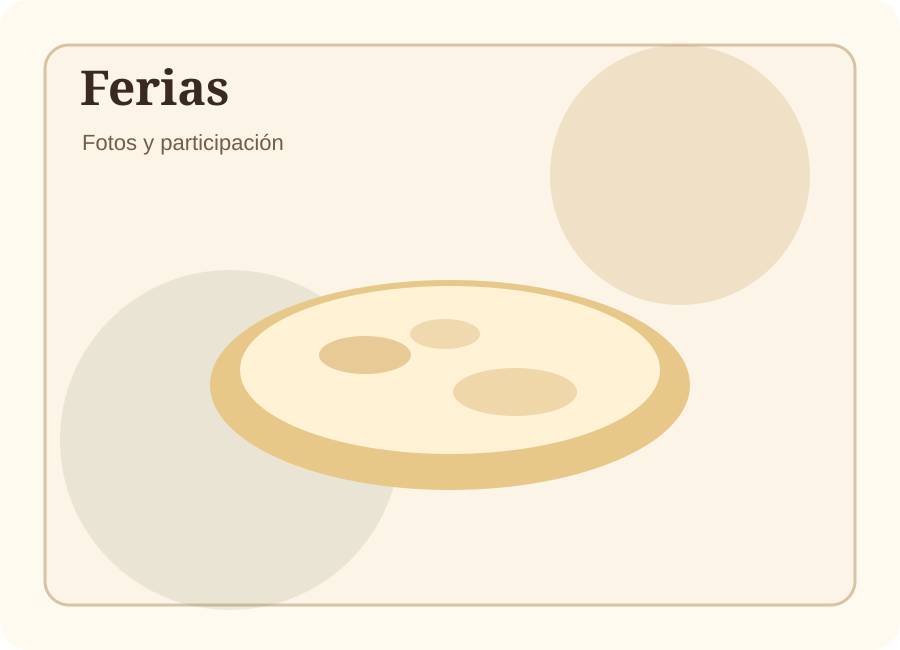
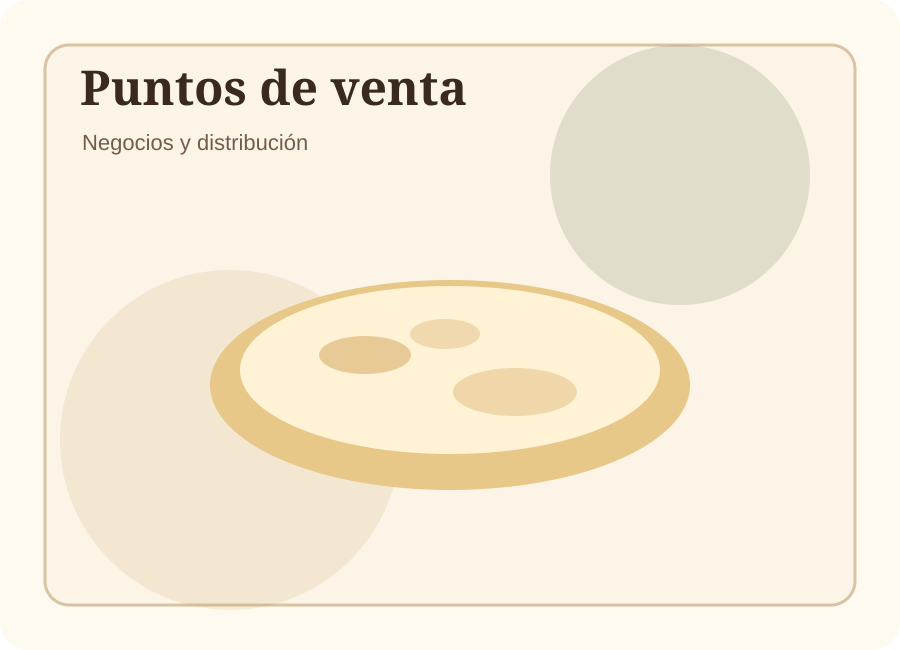
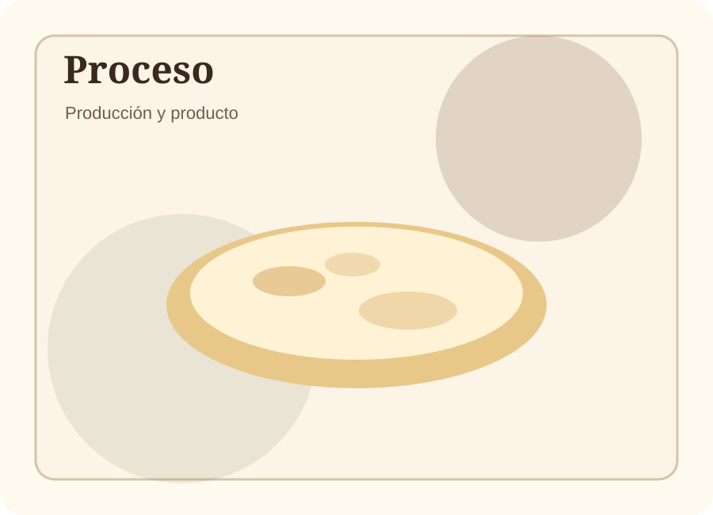

Tiendas y fruterías
Producto para vender por kilo, paquetes o pedidos recurrentes.
Producto local · sorgo blanco · venta a negocios
Espiga Blanca elabora productos de sorgo blanco para puntos de venta, fruterías, tiendas, restaurantes, consultorios de nutrición, ferias y clientes que buscan una alternativa diferente.

Información visible desde el inicio
Coloca aquí la tabla real de tu producto. Esta sección está pensada para que el cliente, nutriólogo o negocio pueda verla rápido sin buscar demasiado.
| Contenido energético | [agregar] kcal |
|---|---|
| Proteínas | [agregar] g |
| Grasas totales | [agregar] g |
| Grasas saturadas | [agregar] g |
| Carbohidratos | [agregar] g |
| Azúcares | [agregar] g |
| Fibra dietética | [agregar] g |
| Sodio | [agregar] mg |
Reemplaza estos campos con los valores reales de tu tabla nutrimental.
Esta tabla ayuda especialmente si quieres vender a consultorios de nutrición, tiendas saludables, ferias, restaurantes o clientes que comparan productos.
Enfoque comercial
No necesitas ser una cadena grande. También podemos trabajar con negocios locales que quieran probar un producto diferente y con historia.
Producto para vender por kilo, paquetes o pedidos recurrentes.
Pedidos para platillos, acompañamientos, tostadas, totopos o menús especiales.
Una alternativa para pacientes que buscan opciones distintas dentro de su alimentación.
Participamos en muestras, ferias, eventos locales y espacios de promoción regional.
Productos
Producto principal para consumo diario, negocios y pedidos recurrentes.
Opción práctica para tiendas, restaurantes, ferias y presentaciones empacadas.
Producto con potencial para botana, muestras, restaurantes y ventas por paquete.
Desarrollo futuro para negocios que quieran producir con un proceso más estandarizado.
Proceso
Seleccionamos la materia prima, preparamos la mezcla, producimos la tortilla y ajustamos el proceso con base en calidad, textura, resistencia y retroalimentación del cliente.
La meta no es solo vender tortillas: es construir un producto confiable que pueda crecer en tiendas, negocios, ferias y distribución local.
Pedidos y cobertura
Para cuidar precio, tiempo y logística, no todos los pedidos se pueden entregar a cualquier distancia. El sistema te ayuda a generar un mensaje de WhatsApp con la información básica.
Estos mínimos son editables. Están calculados con precio de referencia de $20/kg y considerando que una entrega local pequeña debe cubrir gasolina, tiempo y manejo del pedido.
Ferias y eventos
Participamos en espacios donde las personas pueden probar el producto, conocer el proceso y hacer preguntas.
Podemos participar en ferias locales, eventos regionales, muestras de producto, jornadas de salud, encuentros de productores y espacios de emprendimiento.
Evidencia de movimiento
Usa esta sección para mostrar fotos de ferias, entregas, clientes, producción, empaques, visitas o cualquier evidencia real de avance.

[Agregar fecha, lugar y foto real]

[Agregar tiendas, fruterías o negocios donde se ofrece]

[Agregar fotos del proceso, equipo o producto terminado]
Contacto
Escríbenos si quieres comprar producto, venderlo en tu negocio, invitarnos a una feria o preguntar por pedidos recurrentes.
WhatsApp: [agregar número]
Dirección: [agregar dirección]
Horarios: [agregar horarios]
Instagram/Facebook: [agregar redes]